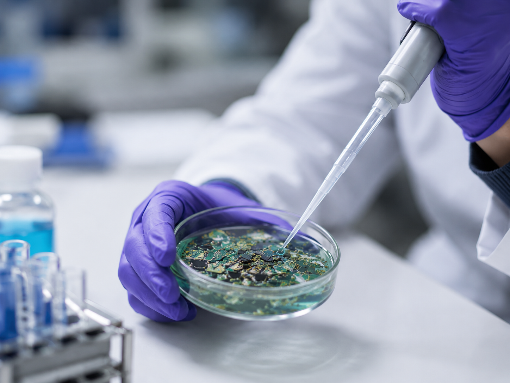
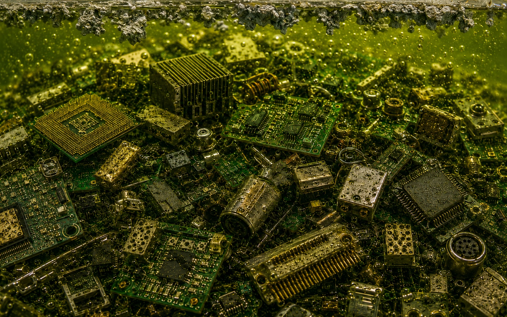
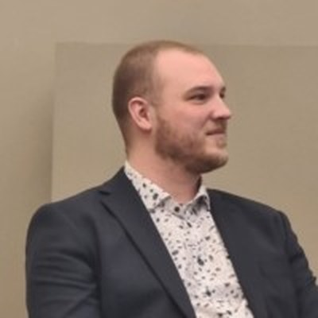
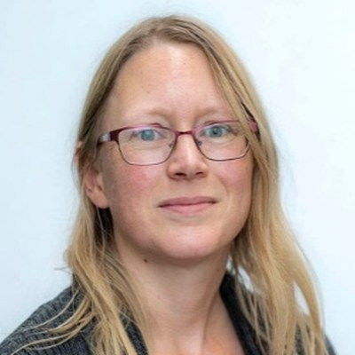
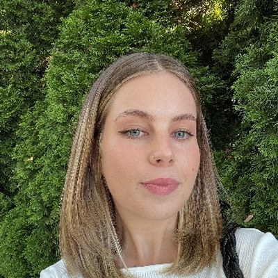
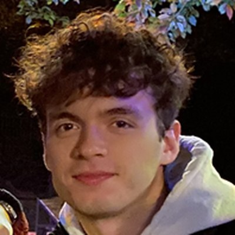
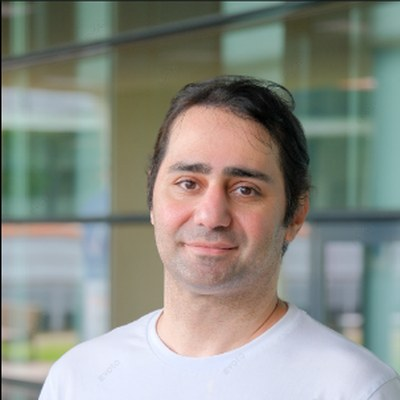
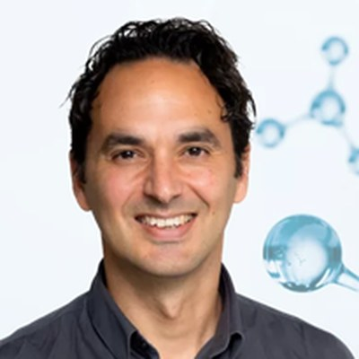
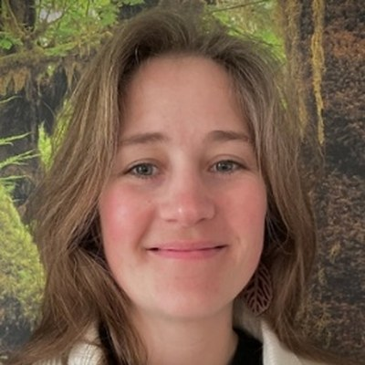

01
Pre-treatment
E-waste and PCBs need only minor pre-treatment, keeping energy costs and waste low.
BioXtract uses targeted microbial bioleaching, sorption and selective dilution to recover and separate critical metals and rare earth elements from e-waste, PCBs, mining effluents and other waste streams. It is a modular, adaptable and low-carbon alternative to conventional chemical and thermal recovery.
Electronic waste contains high concentrations of gold, copper and rare earth elements, far denser than most natural ores. Yet the majority of it is never recovered, while demand for these same critical metals keeps climbing.
Conventional recovery relies on energy-intensive smelting or aggressive chemical leaching. BioXtract takes a different route: letting biology do the selective work, under mild conditions, with minimal chemical input.
Source: UN Global E-waste Monitor, 2024.

In the labFor billions of years, microorganisms have dissolved, concentrated, and re-deposited metals through natural biogeochemical cycles. BioXtract harnesses and optimizes those same mechanisms to recover critical metals from modern waste streams.
The result is a process with a modular, adaptive design, high selectivity, and an environmentally responsible footprint, translating fundamental biogeochemistry into real-world industrial application.
Beyond recovery: BioXtract is designed for directed metal transformation into functional precursors for permanent magnets, luminescent materials and other high-value applications.
Bulk recovery of critical metals, and targeted separation, not just multi-metal leaching.
Each stage can run independently and be integrated into existing recycling and remediation lines.
Operates under mild conditions with minimal chemical input and low energy demand.
The BioXtract platform is applicable throughout the recycling process, from raw, critical-metal-bearing waste to refined materials. Each stage is self-contained and can slot into existing recycling lines, or the four can be chained together into one continuous, closed-loop system with no valuable material wasted.
E-waste and PCBs need only minor pre-treatment, keeping energy costs and waste low.
Microbial redox reactions act as catalysts to release critical elements from solid waste, avoiding the high energy and harsh chemicals consumption of traditional hydrometallurgy.

Targeted (bio)sorption recovers the leached metals, enriching specific elements by their affinity to organic or inorganic sorbents.
Geochemical triggers (pH, ionic strength, competitive ligands and redox manipulation) drive sequential recovery. Organic and mineral sorbents are then regenerated and reused.
BioXtract is an international, multidisciplinary team of environmental scientists united by a common goal: to tackle the growing challenges of waste management and contribute to the green economy through innovative waste valorization.
The team brings together geomicrobiologists with a long history of studying metals, metalloids, and microorganisms that transform them into biominerals. Alongside them are geologists and geochemists with expertise in rare earth element (REE) biogeochemistry, redox transformations, and resource recovery, as well as modelers who predict the behaviour and mobility of critical metals. Supported by strong process-engineering expertise, close industry partnerships, and access to world-class laboratory facilities, this unique consortium spans four continents.
BioXtract
The Netherlands
martyna.glodowska@bioxtract.orgAn established researcher with extensive scientific expertise in geomicrobiology and biogeochemistry with a strong international network across academia and industry. She connects knowledge from different fields and translates scientific knowledge into innovative applications and process concepts, shaping BioXtract's technology and research strategy.

BioXtract
The Netherlands
pieter.vandervelden@bioxtract.orgA driven and well-organized leader with a background in biochemistry, currently completing his PhD. He combines scientific expertise with clear communication and a strong vision for the company, leading BioXtract's development and commercialization efforts.
BioXtract
The Netherlands
jessica.venetz@bioxtract.orgShe gained a PhD at the intersection of multiple disciplines, giving her the ability to bridge scientific, technical, and operational domains. A creative problem-solver who aligns stakeholders and drives the company's day-to-day operations and growth.

BioXtract
The Netherlands
An experienced researcher with extensive practical expertise in laboratory operations and experimental development. She oversees laboratory organization, coordinates procurement and resource management, and trains new team members in methods and procedures.
BioXtract
The Netherlands
A dedicated researcher with expertise in bioprospecting and the discovery of novel metabolic pathways. He identifies biological opportunities and translates fundamental discoveries into practical solutions for the company.

BioXtract
The Netherlands
A careful and dedicated PhD researcher central to the execution and validation of experimental work. Rigorous attention to detail generates the reliable, reproducible data behind BioXtract's technology development.

BioXtract
The Netherlands
A hands-on student research assistant with a background in process engineering. He supports R&D through laboratory experiments and practical research tasks, bringing an engineering perspective to process optimization and scale-up.

Radboud University
The Netherlands
mansour.gilasgar@bioxtract.orgWith a background in economics, he leads market research and commercial validation. He turns complex market intelligence into clear, actionable visualizations, bridging business strategy and technology development.

Radboud Innovation Science
The Netherlands
Brings extensive experience in knowledge transfer and innovation commercialization, connecting academic research with real-world applications and providing guidance throughout the spinout process.

Radboud Innovation Science
The Netherlands
A supportive project manager who advances the venture through effective coordination and stakeholder engagement, aligning the interests of different parties and keeping innovation activities moving forward.
BioXtract is supported through the SPRIN-D Tech Metal Transformation Challenge, run by Germany's Federal Agency for Disruptive Innovation, which backs breakthrough technologies for critical raw-material recovery and a resilient, circular industrial future.
View the SPRIN-D challengeProject ecosystem